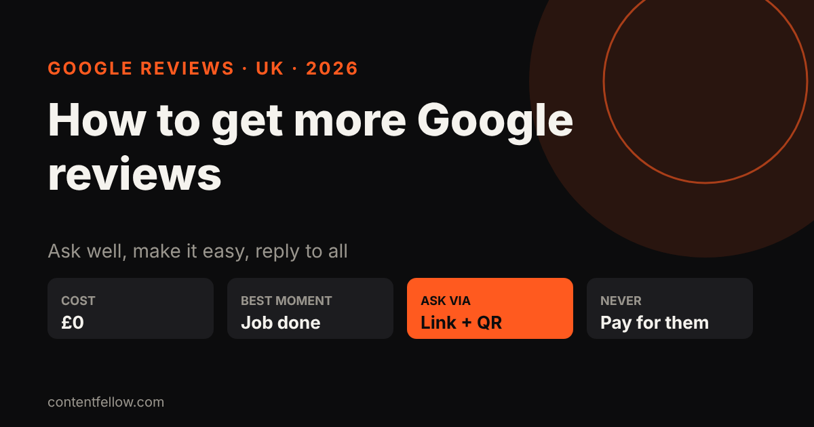
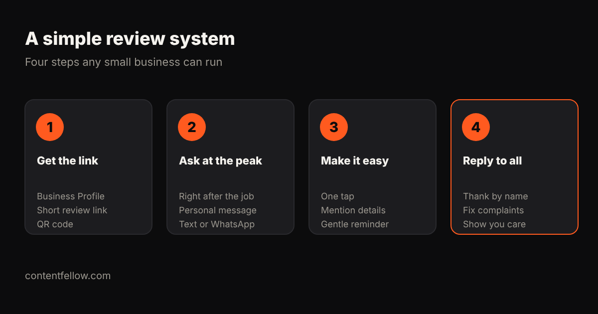

How to Get More Google Reviews for a UK Small Business (2026)
How to get more Google reviews for a UK small business
Quick answer: The way to get more Google reviews for a UK small business is to ask every happy customer, personally, right after the job, with a one-tap review link from your Google Business Profile, then reply to every review. Never pay, offer discounts for reviews, or only ask customers you know are happy in a way that hides bad reviews: Google's policies and the UK's consumer law (the Digital Markets, Competition and Consumers Act 2024) both prohibit fake or incentivised reviews. (Updated October 2026.)
TL;DR: Get your short review link, ask at the moment the customer is happiest, make it one tap, and reply to everything. A steady trickle of recent reviews beats a burst.

Why Google reviews matter
- Ranking: Google lists review count and score as part of "prominence" in local results. See how to rank on Google Maps.
- Choice: people compare star ratings and recent comments before they call.
- AI answers: ChatGPT, Gemini and Google's AI Overviews draw on review signals when they recommend local businesses. See how to get recommended by ChatGPT.

8 steps to get more Google reviews
1. Get your review link
In your Google Business Profile, choose "Ask for reviews" (or "Get more reviews") and copy the short link. Turn it into a QR code for counters, invoices and van doors.
2. Ask at the peak moment
Ask straight after a job is finished, a product arrives or a customer says thanks. Waiting a week halves the response.
3. Ask personally
"Hi Sarah, thanks for choosing us for the kitchen. If you have a minute, a Google review really helps a small local business like ours: [link]." A named, human message works far better than a generic email blast.
4. Use the channel they use
Text or WhatsApp often beats email for trades, salons and restaurants.
5. Prompt for detail, not stars
Suggest what they might mention ("the service, the area, how long it took"). Detailed reviews with towns and services help both customers and search.
6. Send one reminder
One polite follow-up after 3–5 days is fine. More than that is pestering.
7. Reply to every review
Thank people by name. For a bad review, reply calmly, apologise where right and take it offline. Future customers read the replies.
8. Build it into your process
Add the link to invoices, email signatures, receipts and your website. Ask staff to mention it at the end of every job.
What you must not do
Under Google's policies and the UK's DMCC Act 2024 (enforced by the CMA from April 2025), don't:
- buy reviews or post fake ones (including from friends or staff)
- offer discounts, prizes or freebies in return for reviews
- "review gate" by only sending the link to customers you know are happy while steering others away
- copy reviews from other sites
Want help?
ContentFellow's Search Fellow (£89 a month) sets up a review routine, keeps your Business Profile up to date and handles local SEO and GEO. See Search Fellow.
Frequently asked questions
How do I get a Google review link?
Open your Google Business Profile, select "Ask for reviews" and copy the short link. You can share it by text, email or a QR code.
Can I offer a discount for a Google review?
No. Incentivised reviews break Google's policies and UK consumer law. You can simply ask.
How many Google reviews does a small business need?
There is no set number, but more recent, detailed reviews than nearby competitors help. Aim for a steady few every month.
Should I reply to negative reviews?
Yes. Reply politely, acknowledge the issue and offer to sort it offline. It shows future customers you care.
Can I remove a bad Google review?
Only if it breaks Google's policies, for example fake or offensive content. You can report it from your Business Profile.
See all services and prices → · More quick answers on our answers page. Want a site you own? See development packages and website care plans.
Sources: ContentFellow plans and prices from contentfellow.com/pricing/ (October 2026); market ranges are typical quotes from UK freelancer marketplaces and agency price pages checked October 2026. Prices include everything: ContentFellow is not VAT registered. Last updated 19 October 2026.